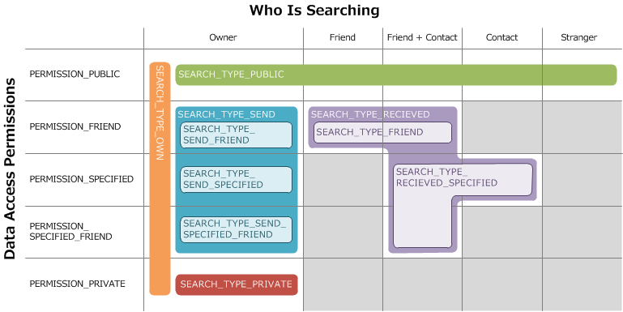
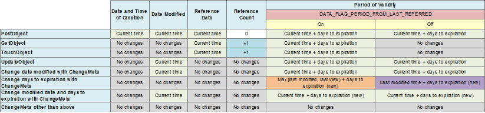

7. Data Stores
7.1. Introduction
A data store is a storage service that provides features to manipulate arbitrary data, including uploading, downloading, updating, and deleting. Data is uploaded to data stores on game servers, in addition to dedicated storage servers. There are two ways to use data stores: using just the game server, or a redundant method that uses the game server in conjunction with the storage server. The application must choose which method to use when uploading data. Following are the advantages and disadvantages of each method.
- Using only the game server (storage server not used)
Advantage: Processing is performed quickly because the processing completes by accessing the game server only.
Disadvantage: The maximum data size that can be uploaded is 1024 bytes.
- Using the game server and storage server
Advantage: The maximum data size that can be uploaded is 10 MiB. You can use the game server data area (meta binary), the storage server data area, or both. If you use both, you can upload any large data to the storage server, while storing items (such as titles and authors that are accessed frequently, or multiple items that are retrieved as a batch process and displayed, for example, by calling the DataStoreClient::SearchObject() function) on the game server.
Disadvantage: Processing may take time because of HTTP access to the storage server, depending on the API, in addition to game server access.
Choose the method to use based on the size of the data that you will be uploading.
7.2. Overall Flow of Data Stores
A data store uses the following overall flow.
- Log in to the game server.
- Initialize the HTTP library. (This process is not required if you are only using the game server.)
- Initialize the service client.
- Upload data. As necessary, use features to download, update, delete, search, and evaluate data, and get and edit metadata.
- Finalize the HTTP library. (This process is not required if you are only using the game server.)
- Finalize the service client, and log out from the game server.
7.3. Initialization and Finalization
Initialization and finalization of the DataStoreClient object is the same as for the matchmaking service client. However, you must initialize and finalize the HTTP library when you use the storage server. For more information, see Code 7.1.
In NX, the size of the socket buffers must be adjusted according to the size of the data being exchanged with the storage server. Use the DataStoreClient::SetHttpSendSocketBufferSize() and DataStoreClient::SetHttpRecvSocketBufferSize() functions to set the size of the socket buffers.
In most cases, NEX storage servers are physically located in Japan or on the East Coast of the US. The default value is 64*1024 bytes for both sending and receiving data. Assuming an ideal communication environment between Japan and the US East Coast that has a round trip latency of 0.18 seconds, no loss, and no network line speed bottleneck, only 364 KB of data can be sent per second (64*1024 bytes/0.18 seconds) due to limitations of the socket buffers. Therefore, to reduce the time needed to send/receive all of amounts of data, the sizes of the send/receive buffers must both be increased.
In Windows, these sizes are set automatically, so any settings configured here are ignored.
// Log in to the game server.
LoginGameSevrer(pNgsFacade);
Credentials* pCredentials = pNgsFacade->GetCredentials();
// Create a ServiceClient instance for each login attempt.
DataStoreClient* pDataStoreClient = new DataStoreClient();
pDataStoreClient->Bind(pCredentials);
// Do the processing.
pDataStoreClient->DoSomething();
// Destroy the object before logout.
delete pDataStoreClient;
// Log out from the game server, and then destroy the object.
LogoutGameServer(pNgsFacade)
delete pNgsFacade;
// Finalize the HTTP library.
curl_global_cleanup();
Note:
You can change the memory allocator used by the HTTP library by using the curl_global_init_mem() function instead of curl_global_init(). If there is no change, the standard malloc, free, realloc, strdup, and calloc functions are used. Note that the memory allocator set by the MemoryManager::SetBasicMemoryFunctions() function is not used from the HTTP library. You can use a thread-unsafe memory allocator with libcurl if you are not downloading or uploading in parallel with DataStore or conducting HTTP communication in parallel with other libraries. Use a thread-safe memory allocator when you are doing anything in parallel. For example, one thread is generated internally when you call the DataStoreClient::GetObject() function. Note that if you call this function again without waiting for it to finalize, downloading takes place in parallel.
7.4. Uploading Data
Use the DataStoreClient::PostObject() function to upload data. The following methods for uploading data are available.
Using only the game server
- Set the data to upload by using the
DataStorePostParam::SetMetaBinary()function on theDataStorePostParamobject. The maximum uploadable data size is 1024 bytes. You must either not callDataStorePostParam::SetSize()and use the default value of0, or explicitly specify0.
Using the game server and the storage server
Two upload methods are available. The maximum uploadable data size for either method is 10 MiB.
- Method of specifying the buffer directly in the parameter
- Specify the data to upload in the
bufferparameter, and set the size using theDataStorePostParam::SetSize()function on theDataStorePostParamobject.
- Method of using an event listener
- Specify a class object that inherits DataStorePostObjectEventListener and that overrides the DataStorePostObjectEventListener::PostChunkedBuffer() function in the
eventListenerparameter. Use this if you want to upload your data in chunks when you cannot allocate enough memory at one time.
If the upload succeeds, a unique ID identifying the uploaded data is stored in the dataId parameter. This ID is called the data ID. The parameters in Table 7.1 can be set with DataStorePostParam as metadata for the data specified when uploading. The person who uploads the data becomes the owner, and the principal ID of the owner is registered in the server as the owner ID. Privileges and Passwords, Tags, Initializing Ratings, Meta-binaries, and Settings Flags are described individually.
Note:
There are a finite number of 64-bit data IDs. Used data IDs are also not reused after the data is deleted. Make sure that you do not use more than this number during the service period.
Also, your implementation must not assume the following.
- Data IDs are assigned in order, starting with 1.
- Data ID values continually increase.
This data has an expiration date that marks the end of its period of validity. When the uploaded data has expired, no operations on the data can be performed. Make sure to specify an appropriate period in your implementation that is long enough (maximum 365 days) so that deleting the data after it expires does not cause problems. Use the DataStorePostParam::SetPeriod() function to specify this value. The expiration date may be extended by calling an API. For more information, see Changing Timestamp Values.
| Item Name | Overview | Initial Value | Function Used |
|---|---|---|---|
| Size (Required.) | The size of the data to upload. This value must match the actual size of the uploaded data. The maximum value is 10,485,760 bytes. You must set it to 0 when you are not using the storage server. | 0 | SetSize() |
| Name | The name of the data to upload. | Empty string | SetName() |
| Data type | The type of the data to upload. The value that is set can be used as a search condition by the DataStoreClient:: function and the DataStoreClient:: function. |
0 | SetDataType() |
| Access privileges | The scope of users who can access or search the data to upload. | DataStorePermission(DataStoreConstants:: |
SetAccessPermission() |
| Update permissions | Update permissions for the data to upload. | DataStorePermission(DataStoreConstants:: |
SetUpdatePermission() |
| Configuration flag | This function specifies the flags to set for the upload. | DataStoreConstants:: |
SetDataFlag() |
| The number of valid days | This function specifies the period (in days) during which uploaded data can be accessed. It can be up to 365 days. | DataStoreConstants:: |
SetPeriod() |
| Tags | Tags to add to the data to upload. A maximum of DataStoreConstants:: tags can be specified. |
Empty | SetTags() |
| Initialization of rating slots | Initialization is required if you use rating features. Specify a slot number in the range from 0 to 15 for the map key, and the initialization parameters for each slot for the value. |
Empty | SetRatingSetting() |
| Meta-binary data | Binary data to store in the metadata. If you are using only the game server without using a storage server, store the data to be uploaded here. | Empty | SetMetaBinary() |
| Persistence setting | Set this parameter to perpetuate the data at the same time that it is uploaded. | DataStorePersistenceInitParam() | SetPersistenceInitParam() |
7.4.1. Data Types
Data types are application-defined values that represent different types of data. By specifying a data type as a search condition, you can filter the searches you perform with the DataStoreClient::SearchObject() or DataStoreClient::SearchObjectLight() function by that data type. Categorizing data by data type improves search performance. Set the data type when you upload data to take advantage of this increase in search performance.
Note that uploading all data with a single data type results in a spike in game server load when searching that data. This spike can lead to sluggish responses to search requests, and to an increased rate of failure when users attempt to log in to the game server.
You could also potentially use tags to categorize data, but depending on the type of data at hand, search responses can still sometimes be sluggish even when searching by tag. We strongly recommend using data types rather than tags to categorize data uploaded to the game server.
7.4.2. Privileges and Passwords
When you upload data, you can set the following five privilege types for both accessing and updating the data. Use the privilege type for such purposes as exchanging data with specific friends.
| Privilege | Description |
|---|---|
| DataStoreConstants:: |
All principal IDs have permission. |
| DataStoreConstants:: |
Only the principal IDs of friends of the owner have permission. |
| DataStoreConstants:: |
Only certain specified principal IDs have permission. |
| DataStoreConstants:: |
Only the owner has permission. |
| DataStoreConstants:: |
Only the friends among a certain number of specified principal IDs have permission. The server confirms that the principal IDs are those of friends. |
The user that uploaded the data has owner privileges. The user with the owner role can access and update the data, and in addition can perform certain operations that only the owner has permission to perform. The user with the owner role can always access and update the target data, regardless of the privilege type of the data.
Users that do not have privileges can also manipulate the target data by specifying a password. A password can be obtained with the DataStoreClient::GetPasswordInfo() function. An access password and update password is set for all data when it is uploaded. Users that then receive those passwords from the data owner can enter them to enable use of all of the same operations that are available to users that actually have the corresponding privileges. No error occurs if a user with privileges enters an incorrect password, and that user still has permission to access and update the data. There is no password that grants owner privileges when entered. Also, passwords cannot be specified with some functions. Depending on the status of the data, referencing and updating cannot be performed even if there is permission. For more information, see Data Status.
For more information about the privileges required for each operation, see Table 7.3.
| Function Name | Required Privileges |
|---|---|
| DataStoreClient:: |
See Also |
| DataStoreClient:: |
N/A |
| DataStoreClient:: |
Update |
| DataStoreClient:: |
Update |
| DataStoreClient:: |
Update |
| DataStoreClient:: |
See Also |
| DataStoreClient:: |
See Also |
| DataStoreClient:: |
See Also |
| DataStoreClient:: |
See Also |
| DataStoreClient:: |
See Also |
| DataStoreClient:: |
Update |
| DataStoreClient:: |
See Also |
| DataStoreClient:: |
See Also |
| DataStoreClient:: |
Owner |
| DataStoreClient:: |
Owner |
| DataStoreClient:: |
Owner |
| DataStoreClient:: |
Owner |
7.4.3. Tags
You can specify up to NUM_TAG_SLOT tags as metadata of the data to upload. Each tag can have up to MAX_TAG_LENGTH of either printable ASCII characters or multiple-byte characters. Empty string tags cannot be specified. For multibyte characters, use UTF-8 byte strings with the \x hexadecimal notation. Do not end a tag string with an ASCII space (0x20). If you do so, the system ignores the trailing space when setting and searching on the tag. You cannot set the same tag more than once for a particular data object.
DataStorePostParam postParam;
// Set the tags. You cannot set the same tag more than once per data object.
qVector<String> tags;
tags.push_back("ABC");
tags.push_back(NEX_T("DEF"));
postParam.SetTags(tags);
7.4.4. Initializing Ratings
Data stores make it possible to rate uploaded data. To use this feature, the first time you upload the data, you must set and initialize a DataStoreRatingInitParam object with the DataStorePostParam::SetRatingSetting() function. Table 7.4 shows the values that can be set. To use the rating feature on initialized data, use the data rating functions. For more information, see section 7.10.
| Item Name | Overview | Initial Value | Function Used |
|---|---|---|---|
| Initial value for the ratings total value | Sets the initial value for the ratings total value. | 0 | SetInitialValue() |
| Minimum rating value | Sets the minimum value for the ratings values that can be rated at the same time. | Not set. | SetRangeMin() |
| Maximum rating value | Sets the maximum value for the ratings values that can be rated at the same time. | Not set. | SetRangeMax() |
| Duplicate lock | Sets the duplicate lock when rating. You can specify several restrictions, such as making users wait for an hour before making another rating, or only allowing one rating per day. | Not set. | SetLock() |
| Option flags | Specify options for ratings. See Table 7.5. | Not set. | SetFlag() |
| Privilege | Description |
|---|---|
| DataStoreConstants:: |
Ratings are editable. If the same user makes another rating, the new rating value replaces the first rating value. If this flag is not set, then each rating is added as a separate rating. |
| DataStoreConstants:: |
Negative ratings total values are rounded to zero. |
| DataStoreConstants:: |
Prevent users from rating themselves. |
Note:
About Duplicate Locks (Code 7.4)
Set the locking method by specifying a DataStoreRatingLockInitParam object with the DataStoreRatingInitParam::SetLock() function.
- Set with the DataStoreRatingLockInitParam::SetIntervalLock() function.
- Specifies a lock in seconds. Specify the number of seconds with
intervalSec. This setting prevents another rating for the specified number of seconds (such as 900) from the last one.
- Set with the DataStoreRatingLockInitParam::SetPeriodicLock() function.
- Locks ratings for the specified period. Specify a period for
period(for example, every Monday through every Sunday, until the first of the next month, and so on), and specify a time in the range from-23to23(UTC) forhour. For example, you can specify to reset rating locks every Monday at 0:00 Japan Standard Time.
- Set with the DataStoreRatingLockInitParam::SetDaysAfterLock() function.
- Locks ratings for the specified number of days. Specify a number of days for
days, and specify a time from -23 to 23 (UTC) forhour. For example, you can allow ratings to be made once per day.
- Set with the DataStoreRatingLockInitParam::SetPermanentLock() function.
- Sets a permanent lock. This setting sets a permanent lock, so that after a rating is made it cannot be rated again.
DataStorePostParam postParam;
DataStoreRatingInitParam ratingInitParam;
// Initialize the rating (use three slots).
qMap<int8_t, DataStoreRatingInitParam> ratings;
for (int8_t i = 0; i < 3; ++i) {
ratings.insert(std::make_pair(i, ratingInitParam));
}
postParam.SetRatingSetting(ratings);
// Lock for the specified number of seconds. Lock for 900 seconds.
DataStoreRatingInitParam ratingInitParam;
DataStoreRatingLockInitParam ratingLockInitParam;
ratingLockInitParam.SetIntervalLock(900);
ratingInitParam.SetLock(ratingLockInitParam);
// Lock for the specified number of days. You can make one rating per day. Rating locks are reset at 0:00 JST (15:00 UTC).
DataStoreRatingInitParam ratingInitParam;
DataStoreRatingLockInitParam ratingLockInitParam;
ratingLockInitParam.SetDaysAfterLock(0, 15);
ratingInitParam.SetLock(ratingLockInitParam);
// Lock for the specified period. Reset locks every Monday at 0:00 UTC.
DataStoreRatingInitParam ratingInitParam;
DataStoreRatingLockInitParam ratingLockInitParam;
ratingLockInitParam.SetPeriodicLock(DataStoreConstants::RATING_LOCK_PERIOD_MON, 0);
ratingInitParam.SetLock(ratingLockInitParam);
// Lock for the specified period. Reset locks at the end of each month JST.
DataStoreRatingInitParam ratingInitParam;
DataStoreRatingLockInitParam ratingLockInitParam;
ratingLockInitParam.SetPeriodicLock(DataStoreConstants::RATING_LOCK_PERIOD_DAY1, -9);
ratingInitParam.SetLock(ratingLockInitParam);
7.4.5. Meta-Binaries
You can store up to 1024 bytes of binary data in the metadata. Storing and retrieving meta-binaries only accesses the game server, so it is faster than using the storage server. For this reason, you can allocate usage based on the data size and purpose, such as using meta-binaries for small amounts of data, and a storage server for larger data.
static const META_BINARY_SIZE = 3;
DataStorePostParam postParam;
// Set the binary data.
qByte metaBinary[META_BINARY_SIZE];
memcpy(metaBinary, "123", META_BINARY_SIZE);
postParam.SetMetaBinary(metaBinary, META_BINARY_SIZE);
7.4.6. Settings Flags
The settings for the data that is uploaded are configured by the DataStorePostParam::SetDataFlag() function. Table 7.6 shows the meanings of the different flags. Do not specify flags that are not shown in the table.
| Flag | Description |
|---|---|
| DataStoreConstants:: |
None of the settings flags are used. |
| DataStoreConstants:: |
When the uploading has completed, the status of the data is DataStoreConstants:: and it cannot be seen by anybody except the owner. To make data viewable, the operator must use NMAS to change the status of the data, as described in section 7.17. |
| DataStoreConstants:: |
The period of validity is extended when the data is accessed or updated by functions like GetObject(), UpdateObject(), and ChangeMeta(). For more information, see 7.15.2. |
| DataStoreConstants:: |
The data on the server is disabled after the DataStoreClient:: function has ended and it remains in that state until the DataStoreClient:: function is called. For more information, see 7.4.7. |
7.4.7. Batch Uploading
You can use the batch-upload feature to upload multiple related data sets. Use this feature to guarantee the atomicity of data store operations; that is, either all of the data is uploaded or none of the data is uploaded. Use this feature to prevent data from being partially uploaded, such as when the console is accidentally turned off or disconnected from the network.
To use this feature, first set the DataStoreConstants::DATA_FLAG_NEED_COMPLETION flag, and then upload an arbitrary number of data sets with the DataStoreClient::PostObject() function. When the upload completes, the data is registered on the server in a status that cannot be accessed by anyone including the owner. After all of the data is uploaded, enable all of the data on the server at the same time by passing the corresponding data IDs as arguments to the DataStoreClient::CompleteSuspendedPostObject() function. The data can then be accessed or updated just like normal data.
If any of the data that corresponds to the data IDs given to the DataStoreClient::CompleteSuspendedPostObject() function is invalid for any reason, or the process fails, the process is rolled back. If an error occurs, you can get the first error with CallContext::GetOutcome(). If persistence settings were configured for the data, they take effect when this asynchronous process is successful. Uploaded data must be enabled with this function within three hours from when the DataStoreClient::PostObject() function was started. After three hours, the data on the server is automatically deleted. If DataStoreConstants::DATA_FLAG_NEED_COMPLETION was not specified, this function does not need to be called because the data on the server becomes valid at the same time that the DataStoreClient::PostObject() function completes. You do not need to use this feature when you upload only a single data set. Atomicity of data store operations is guaranteed for a single set of data even when DataStoreConstants::DATA_FLAG_NEED_COMPLETION is not specified, and it is not possible for that data to be only partially uploaded to the server.
7.4.8. Uploading with a Specific Data ID
When data is uploaded, a data ID is usually assigned automatically. If you want to upload data to a predetermined data ID, there is a feature that lets you specify the data ID when uploading. When this feature is used, you can implement a series of actions where the upload and rating slot are initialized if the specified data ID does not contain any data, and then the usual rating process takes place.
For ratings, you can perform this entire series of actions using DataStoreClient::RateObjectWithPosting() or DataStoreClient::RateObjectsWithPosting(). If there is no data at the specified data ID, these functions both initialize and perform the rating; if there is data at the specified data ID, they perform the rating as usual.
This feature has the following limitations.
- The specified data ID must be between
900000and999999. Normally, uploaded data items are indexed starting at 1,000,000, so IDs exceeding the range cannot be specified. - The data can only be used by the game server and cannot be uploaded to a storage server.
- The principal ID of the official user (1500443851674475083) is used for the owner, not the principal ID of the user that uploaded the data.
- The data does not expire and cannot be deleted.
- Access and update permissions are fixed at
DataStoreConstants::PERMISSION_PUBLIC. - Data cannot be deleted using the
DataStoreClient::DeleteObject()function. Use NMAS if the data needs to be deleted. - Data cannot be updated using the
DataStoreClient::ChangeMeta()function. - Tags cannot be assigned.
- Cannot be set in a persistence slot.
Note:
The default value of access and update permissions for DataStorePostParam is DataStoreConstants::PERMISSION_PRIVATE. Use the DataStorePostParam::SetAccessPermission() and DataStorePostParam::SetUpdatePermission() functions to set DataStoreConstants::PERMISSION_PUBLIC explicitly.
Only some parameters can be set using DataStorePostParam. In Table 7.1, these parameters are the name, data type, initial rating slot setting, and meta-binary.
- DataStorePostParam::SetName()
- DataStorePostParam::SetDataType()
- DataStorePostParam::SetRatingSetting()
- DataStorePostParam::SetMetaBinary()
If you call a member function other than one of these and set something other than the default value, QERROR(DataStore, InvalidArgument) will be returned when you call DataStoreClient::PostObject().
- Batch processing
- You can specify multiple data IDs and upload multiple data items. Up to
BATCH_PROCESSING_CAPACITY_POST_OBJECTIDs can be specified.
- Runtime errors
- The following errors are returned by
CallContext::GetOutcome().QERROR(DataStore, OperationNotAllowed): The specified data ID already contains data.QERROR(DataStore, InvalidArgument): The parameter is invalid.
7.5. Downloading Data
Use the DataStoreClient::GetObject() function to download uploaded data. The following methods for downloading data are available.
- Method of specifying the buffer directly in the parameter
- Specify the pointer to the buffer where the data to download is to be saved in the
bufferparameter, and specify the buffer size in thebufferSizeparameter. The buffer size must be larger than the size of the data to download.
- Using an event listener
- Specify a class object that inherits
DataStoreGetObjectEventListenerand that overrides theDataStoreGetObjectEventListener::ProcessResponse()function in theeventListenerparameter. Use if you want to download your data in chunks when you cannot allocate enough memory at one time.
Note:
When using an event listener, if the DataStoreGetObjectEventListener::ProcessResponse() function of the class being overridden returns false for a set period of time, the connection with the storage server is broken, causing the data download to fail. Avoid an implementation where the returned value is false for longer than 10 seconds. In addition, this function is intended for flow control. Do not use it to pause or stop downloads.
If the process succeeds, specify DataStoreConstants::DATA_FLAG_PERIOD_FROM_LAST_REFERRED when uploading data to update the expiration. For more information, see 7.15.2.
Note:
You cannot use the DataStoreClient::GetObject() function unless you are using a storage server. When you want to get data, use the DataStoreClient::GetMeta() function to get the metadata. For more information, see 7.11.
7.6. Updating Data
Use the DataStoreClient::UpdateObject() function to update uploaded data. The following methods for updating data are available. Use an event listener if you want to upload your data in chunks because you cannot allocate enough memory at one time.
- Using a buffer
- Specify the following arguments: a pointer to a
ProtocolCallContextobject, aDataStoreUpdateParamobject, a pointer to a buffer of the data to upload, and whether to copy the contents of the buffer inside the library.
- Using an event listener
- Specify the following arguments: a pointer to a
ProtocolCallContextobject, aDataStoreUpdateParamobject, and a pointer to aDataStorePostObjectEventListenerobject.
If the action is successful, the date modified and the expiration date (metadata in the updated data) are updated. For more information, see 7.15.2.
Note:
You cannot use the DataStoreClient::UpdateObject() function unless you are using a storage server. When you want to update your data, use the DataStoreClient::ChangeMeta() function to update metadata. For more information, see 7.12.
7.7. Deleting Data
Use the DataStoreClient::DeleteObject() function to delete uploaded data. Note that deleted date cannot be recovered. To specify a persistence slot ID and delete data, use the DataStoreClient::UnperpetuateObject() function. When persistent data is deleted, it is automatically made non-persistent.
7.7.1 Batch Processing
You can delete uploaded data as a batch process. Use the DataStoreClient::DeleteObject() function in the same way as when you make individual deletions.
7.7.2. Logically and Physically Deleting Data
Data that has been manually deleted by the DataStoreClient::DeleteObject() function is in a logically deleted state (its status is DELETING, described later).
Similarly, existing data that is deleted by one of the following operations for making data persistent will also be in this logically deleted state.
- When
trueis specified for thedeleteLastObjectparameter of theDataStorePersistenceInitParamconstructor - When
trueis specified for the DataStorePersistenceInitParam::SetDeleteLastObject() function.
Logically deleted data cannot be fetched by the application, but it continues to exist as data on the server. When data has entered this logically deleted state, the validity period will be renewed at either the current expiration date, or the current date/time plus 7 days, whichever comes first.
Later, the data will enter the physically deleted state (the DELETED status, described later) when the expiration date that was set for the data has passed. When the data is physically deleted, it is completely deleted from the storage server.
7.8. Searching for Data
Use the DataStoreClient::SearchObject() or DataStoreClient::SearchObjectLight() function to search for uploaded data. The search results are received as a DataStoreSearchResult object. Table 7.7 lists the information that can be obtained. When searching for data, a maximum of 100 hits can be obtained at one time.
The items shown in Table 7.8 can be set as search conditions in DataStoreSearchParam.
- The data covered by the search type set by the
DataStoreSearchParam::SetSearchType()function is shown in Figure 7.1. - Specify the appropriate flags in the
DataStoreSearchParam::SetResultOption()function to include tags, ratings information, and meta-binaries.
Note:
When getting search results including meta-binary data, your implementation must adjust the number of results retrieved so that the total size of the search results is not too large. If the overall size is large, it may take longer to retrieve the data due to lower packet transfer efficiency. As a rule, keep the total size of meta-binary data in metadata to no more than 20 KiB. For example, if the size of the meta-binary data is 1 KiB, adjust the number retrieved at one time to 20.
| Item Name | Get Function |
|---|---|
| Total number of search hits | GetTotalCount() |
| Search results | GetResult() |
| Whether the number of search matches is accurate | GetTotalCountType() |
Note:
The number of search matches (the DataStoreSearchResult::GetTotalCountType() function).
When it comes to searches, a fast response is the highest priority, so the feature to get the number of hits is disabled by default. To enable this feature, use the DataStoreSearchParam::SetTotalCountEnabled() function. Note that this feature cannot be enabled if you search using the DataStoreClient::SearchObjectLight() function.
Also note that even if you enable the feature to get the number of hits, the DataStoreSearchResult::GetTotalCount() function may not return an accurate count if the number of search matches exceeds a certain value. Account for the following in your implementation.
- When the feature to get the number of search matches is enabled
- If the
DataStoreSearchResult::GetTotalCountType()isDataStoreConstants::SEARCH_RESULT_TOTAL_EXACT, the count is accurate. However, there are small errors with frequent search conditions because the system caches searches for a set period. - If the
DataStoreSearchResult::GetTotalCountType()isDataStoreConstants::SEARCH_RESULT_TOTAL_MINIMUM, it indicates that there is more matching data than the value thatDataStoreSearchResult::GetTotalCount()returned.
- If the
- When the feature to get the number of search matches is disabled
- The
DataStoreSearchResult::GetTotalCountType()function is set toDataStoreConstants::SEARCH_RESULT_TOTAL_DISABLED, and the number of search matches is always0. What is contained in the search results is the data itself that was hit in the search.
- The
| Item Name | Overview | Initial Value | Function Used |
|---|---|---|---|
| Search type | Set what data to search for in accordance with access privileges. ( Figure 7.1 ) | DataStoreConstants:: |
SetSearchType() |
| Targeted principle IDs | Specify this parameter to narrow the search to the principal IDs of the owners. | Empty | SetOwnerIds() |
| Type of targeted principle IDs | Specify this parameter to narrow the search to a type of data owner principal ID. | DataStoreConstants:: |
SetOwnerType() |
| Principal ID of access permissions owner | You can specify this parameter when the search type is SEARCH_ or SEARCH_. It can be used to choose access rights for the send destination and also search for data that a specific person has received. |
Empty | SetDestinationIds() |
| Data type | The type of data to search for. | Empty | SetDataType() |
| Start time of data upload | Data with the specified date or later. | DataStoreConstants:: |
SetCreatedAfter() |
| Date uploaded end | Data with the specified date or sooner. | DataStoreConstants:: |
SetCreatedBefore() |
| Column to sort on | The column on which to sort the search results. | DataStoreConstants:: |
SetSearchSortOrderColumn() |
| Sort order | Whether to sort the search results in ascending or descending order. | DataStoreConstants:: |
SetSearchSortOrder() |
| Return value option | Specify this parameter to include tags, rating values, or binary data in the search results. | 0 | SetResultOption() |
| Tags | Tags to search for. Items matching all specified tags are retrieved. Tags cannot be specified with the DataStoreClient:: function. |
Empty | SetTags() |
| Search range | The range in which to search. | ResultRange() | SetResultRange() |
| Whether the search result cache is used. | Sets whether to use the search results cache. When the cache in enabled, search results are retrieved from a cache maintained on the server. | false | SetUseCache() |
| Whether to get the number of search matches | Specifies whether to get the number of search matches. You cannot get this hit total with the DataStoreClient:: function. |
false | SetTotalCountEnabled() |

Figure 7.1. Data Searched by Search Type
Note:
For example, when access privileges for the search data is set to DataStoreConstants::PERMISSION_PUBLIC, if the search type is set to DataStoreConstants::SEARCH_TYPE_PUBLIC, the data is the search target data for anyone who searches and the data can be in the search hits. If the access privileges are DataStoreConstants::PERMISSION_FRIEND, you can set the search type to DataStoreConstants::SEARCH_TYPE_FRIEND to enable data to be searched and hits returned when it is a friend doing the searching. Normally, only data with a status of NONE can be searched, but data with status of PENDING or REJECTED where the local user is the owner can be searched if DataStoreConstants::SEARCH_TYPE_OWN_PENDING, DataStoreConstants::SEARCH_TYPE_OWN_REJECTED, or DataStoreConstants::SEARCH_TYPE_OWN_ALL is used.
7.8.1. Differences Between DataStoreClient::SearchObject() and DataStoreClient::SearchObjectLight()
The DataStoreClient::SearchObjectLight() function is limited in that you cannot specify the following search criteria, which places a high load on the game server. If you want to specify these search criteria, use the DataStoreClient::SearchObject() function.
- Tags
- Whether to get the number of search matches
Although the DataStoreClient::SearchObjectLight() function cannot specify these search criteria, the up side is that the frequency of API calls is less restrictive with this function than with DataStoreClient::SearchObject().
7.8.2. Search Result Cache
Use the DataStoreSearchParam::SetUseCache() function to enable the search result cache. When the search result cache is enabled, search results are temporarily cached on the server and then retrieved from the cache if a search with the same criteria is performed at a later time. By default, search results are cached for three minutes. Using the search result cache can improve the speed of search responses in most cases.
Because search results are retrieved from the cache, however, if the target search data was updated or new data was uploaded since the last search, the updated or new data may not be included in your search results depending on when the subsequent search is performed.
We recommend using the search results cache if it is not critical that search results always be up to date or if several users will be searching using the same search conditions in your application. In such cases, limit the number of cached searches to 200.
Searching by tags or sorting search results by a column other than data ID can result in spikes in game server load, which in turn can make search responses sluggish and increase the rate of failure when users attempt to log in to the game server. We also recommend caching search results if users are likely to perform these types of computationally expensive searches.
7.9. Displaying Data IDs
Depending on the application, displaying data IDs as is may make it easy for malicious users to determine the scope of services or level of security in the application. Allowing users to search using raw data IDs may enable them to specify unexpected values to gain invalid access to data that they are not supposed to have access to.
Converting data IDs using the DataStoreDataCode class allows you to get data code strings unique to each title that are both suitable for display in the application and cannot be easily predicted.
Datacode strings can be a maximum of 14 characters in length including the data ID (up to 56 bits) and checksum (8 bits), and can contain any of the following 28 characters: 0 1 2 3 4 5 6 7 8 9 B C D F G H J K L M N P R T V W X Y. The length of datacode strings varies depending on the data ID values. For example, data IDs from 0 to 268,435,455 can be represented with 1 to 8 characters, and data IDs from 0 to 4,294,967,295 can be represented with 1 to 9 characters.
To get a data code string, use the DataStoreDataCode::CreateFromDataId() function to create a DataStoreDataCode object, and then use the DataStoreDataCode::ToDataCodeString() function. To ensure that data code strings are always 14 characters long, use the DataStoreDataCode::ToDataCodeStringZeroPad() function to left-pad data codes with zeros.
Use the DataStoreDataCode::CreateFromDataCodeString() function to convert data code strings back to DataStoreDataCode objects. Use the DataStoreDataCode::IsValid() function to determine whether a data code string is valid. Use the DataStoreDataCode::GetDataId() function to get the data ID corresponding to a data code string. In the DataStoreDataCode::CreateFromDataCodeString() function, lowercase characters are converted to uppercase characters, and characters that are suspected to be typos are converted to the appropriate characters. (I->1, Q->0, O->0, Z->2, S->5)
Specify the access key for your title as the checksum key when using the DataStoreDataCode::CreateFromDataId() and DataStoreDataCode::CreateFromDataCodeString() functions. These functions still work if you specify a value other than the access key for your title, but you will lose the ability to calculate and test datacode strings on non-client systems.
7.10. Rating Data
With Data Store, 16 fields (called slots) are provided for each data ID that is uploaded, and ranking total value and information about the number of times ranked are saved and can be accessed. This feature is designed to allow public ratings of content, such as a five point scale or a “like” system, and to allow those ratings to be accessed.
You must initialize the ratings of data when you upload it to use these features. For more information, see 7.4.4. The following features are available for data that has been initialized.
Note:
Your ratings implementation must ensure that total ratings values fit into a 64-bit signed int. If the total exceeds this range, it is rounded to the maximum or minimum value.
- Calculating ratings total values
Use the
DataStoreClient::RateObject()function to calculate ratings total values. When initializing ratings, only the provided slot can be rated.
- Getting ratings information
Use the
DataStoreClient::GetRating()function to get the ratings information or ratings log. When initializing ratings, ratings information can be obtained only from the provided slot. You can get rating information by using theDataStoreRatingInfoobject, and the rating log by using theDataStoreRatingLogobject. The information you get from these is shown in Table 7.9 and Table 7.10, respectively.Table 7.9. Information Retrievable From DataStoreRatingInfo Item Name Get Function The total value of the rating GetTotalValue() Number of times rated GetCount() Initial value for the ratings total value GetInitialValue() Table 7.10. Information Retrievable From DataStoreRatingLog Item Name Get Function Whether oneself rated in the past IsRated() Rating value when oneself rated previously GetRatingValue() Date and time the duplicate lock was released GetLockExpirationTime()
- Resetting ratings information
Use the
DataStoreClient::ResetRating()function to reset ratings information and the ratings log. The ratings total value is restored to the default value, and the number of times rated becomes 0. The ratings log is cleared.
7.10.1. Batch Processing
- Rating as a batch process
- Use the
DataStoreClient::RateObject()function in the same way as when you rate individual objects.
- Getting rating information as a batch process
- Use the
DataStoreClient::GetRating()function in the same way as when you get individual ratings. There is no function to get ratings as a batch process along with the ratings log.
- Resetting ratings information as a batch process
- As with resetting a single rating, use the
DataStoreClient::ResetRating()function to reset multiple ratings.
7.11. Getting Metadata
Use the DataStoreClient::GetMeta() function to get the metadata of uploaded data.
If the metadata you want to get is a tag, rating information, meta-binary, or principal ID with privileges, specify the flag for the data you want to get with the DataStoreGetMetaParam::SetResultOption() function. If the operation succeeds, the function stores the value of the metadata in the DataStoreMetaInfo object. Table 7.11 shows the information that you can get from a DataStoreMetaInfo object.
| Item Name | Get Function |
|---|---|
| Data ID | GetDataId() |
| Principal ID | GetOwnerId() |
| Data size | GetSize() |
| Status | GetStatus() |
| Name | GetName() |
| Data type | GetDataType() |
| Access privileges | GetAccessPermission() |
| Update permissions | GetUpdatePermission() |
| Creation date and time | GetCreatedTime() |
| Date modified | GetUpdatedTime() |
| The number of valid days | GetPeriod() |
| Configuration flag | GetDataFlag() |
| Period of validity | GetExpireTime() |
| Tags | GetTags() |
| Rating information | GetRating() |
| Meta-binary data | GetMetaBinary() |
7.11.1 Batch Processing
You can get metadata from uploaded data as a batch process. Use the DataStoreClient::GetMeta() function in the same way as when you get individual metadata items.
Note:
When getting the data including meta-binary as a batch process, your implementation must adjust the amount of data to obtain so that the total size of the batch results is not too large. If the overall size is large, it may take longer to retrieve the data due to lower packet transfer efficiency. As a rule, keep the total size of meta-binary data in metadata to no more than 20 KiB. For example, if the size of the meta-binary data is 1 KiB, adjust the number retrieved at one time to 20.
7.12. Updating Metadata
Use the DataStoreClient::ChangeMeta() function to update the metadata of uploaded data. Specify the flag for the metadata you want to update with the DataStoreChangeMetaParam::SetModificationFlag() function. Table 7.12 provides a list of flags that can be set as metadata to update.
If the action completes normally, and DataStoreConstants::MODIFICATION_FLAG_PERIOD and DataStoreConstants::MODIFICATION_FLAG_UPDATED_TIME have been set to flags, the update time and period of validity (expiration date) are updated as shown in 7.15.2.
| Flag | Description |
|---|---|
| DataStoreConstants:: |
Not set. |
| DataStoreConstants:: |
Change the title. |
| DataStoreConstants:: |
Change access permissions. |
| DataStoreConstants:: |
Change update permissions. |
| DataStoreConstants:: |
Change the number of valid days. |
| DataStoreConstants:: |
Change meta-binary data. |
| DataStoreConstants:: |
Change tags. |
| DataStoreConstants:: |
Update the updated time to the current time. |
| DataStoreConstants:: |
Change the data type. |
| DataStoreConstants:: |
Change the status. |
7.12.1 Batch Processing
You can update metadata from uploaded data as a batch process. Use the DataStoreClient::ChangeMeta() function in the same way as when you change individual metadata items.
7.12.2. Compare and Swap
To update metadata by comparing and swapping, set DataStoreChangeMetaCompareParam using the DataStoreChangeMetaParam::SetChangeMetaCompareParam() function. Flags and values for information being compared are set in DataStoreChangeMetaCompareParam.
If the set value and the actual value are not the same, no change is made and the CallContext::GetOutcome() function returns QERROR(DataStore, ValueNotEqual).
| Flag | Description |
|---|---|
| DataStoreConstants:: |
Not set. |
| DataStoreConstants:: |
Compares titles. |
| DataStoreConstants:: |
Compares access permission. |
| DataStoreConstants:: |
Compares update permissions. |
| DataStoreConstants:: |
Compares the number of days in the valid period. |
| DataStoreConstants:: |
Compares binary data. |
| DataStoreConstants:: |
Compares tags. |
| DataStoreConstants:: |
Compares the data type. |
| DataStoreConstants:: |
Compares status. |
| DataStoreConstants:: |
Compares all. |
7.13. Perpetuating Data
Normal uploaded data is deleted automatically after its period of validity has expired. Use the data-persistence feature to configure the data so it is perpetuated and not automatically deleted. Each user can perpetuate up to 16 sets of data. Persistent data can be browsed using the principal ID and the slot ID (persistent data slot IDs are from 0 through 15) where the information for the persistent data is saved. This feature has the following uses.
- All players can save their data ID storing their profile information to persistence slot ID 0. When people meet over the network, they can get each other's player information from persistence slot ID 0. Using this procedure eliminates the need to exchange another separate data ID, and the data is always guaranteed to be there.
- When uploading scores using the ranking library, score-related information can be uploaded to a separate data store and made persistent, and that persistence slot ID can be stored to a ranking parameter. Using this procedure, only data from the data store gets registered to the ranking, and you can avoid inconsistencies that can arise when data expires.
7.13.1. Perpetuating Data
To perpetuate data that has been uploaded already, use the DataStoreClient::PerpetuateObject() function. The period of validity for the perpetuated data becomes DataStoreConstants::PERMANENT_DATE_TIME. If that same persistence slot ID was previously in use, its data is unperpetuated. The same data ID cannot be set to multiple persistent slot IDs.
To make data persistent at the same time that it is uploaded, configure persistence for the DataStorePostParam class object you specify when you call the DataStoreClient::PostObject() function. Specifically, use the DataStorePostParam::SetPersistenceInitParam() function to set a persistence slot ID for the specified DataStorePersistenceInitParam class object. If the same persistence slot ID was used in the past, its data is unperpetuated. To delete the data at the same time that it is unperpetuated, specify true for the DataStorePersistenceInitParam::SetDeleteLastObject() function. To maintain consistency in this series of processes, the data ID set to the persistence slot is always a valid value around the DataStoreClient::PostObject() function call. In other words, when you reference data using the DataStoreClient::GetObject() and DataStoreClient::GetMeta() functions, you can always get valid data if you specify the target data using a persistence slot ID with DataStorePersistenceTarget instead of using a data ID. This property is unrelated to the settings configured with the DataStorePersistenceInitParam::SetDeleteLastObject() function.
7.13.2. Unperpetuating Data
To restore perpetuated data to its original state, use the DataStoreClient::UnperpetuateObject() function. When you unperpetuate the data, it is reconstituted as data that can be automatically deleted. The unperpetuated data expires after the current time plus the number of valid days. When you delete data with the DataStoreClient::DeleteObject() function, the data is automatically removed from its persistence slot and unperpetuated. When the option to delete past data with the DataStoreClient::UnperpetuateObject() function is enabled, it works like the DataStoreClient::DeleteObject() function works to delete data.
7.13.3. Getting Persistence Information
To get data ID from the principal ID and persistence slot ID, use the DataStoreClient::GetPersistenceInfo() function. There is an API to get one set of information by specifying a single persistence slot ID, and an API to get information as a batch process by specifying multiple persistence slot IDs.
7.14. Getting Passwords
An access password and update password is set for all data when it is uploaded. Giving these passwords to users grants them access and update rights for the data if they did not already have them previously. For more information about passwords, see 7.4.2. Use the DataStoreClient::GetPasswordInfo() function to get passwords.
7.15. Common Data Store Specifications
7.15.1. Data Status
Each piece of data that is uploaded has a status, and operations change according to the status. The status can be obtained with the DataStoreClient::GetMeta() function.
| Data Status | Description |
|---|---|
| NONE | Normal state. Data for which upload completes automatically transitions to this status. Access and modification are possible according to the set privileges and passwords. |
| CREATING | Data is being uploaded. No one, including the owner, can access or modify. |
| PENDING | The data is being tested. Uploaded data flagged with DataStoreConstants:: transition to this status instead of NONE. Access is not allowed with the set privileges and passwords. Only the owner can access and modify. |
| DELETING | Data for which a delete request has been received. No one, including the owner, can access or modify. Data transitions to this status when it is deleted by the DataStoreClient:: function or on NMAS. Subsequently, when the validity period expires, the data automatically transitions to DELETED. |
| DELETED | Data that has been physically deleted on the storage server. No one, including the owner, can access or modify. Expired data transitions to this status. Around 7 days after that, the game server's record of the data (including the meta binary) will be deleted automatically. |
| REJECTED | Data that was rejected during testing. The system does not automatically transition data to this status. As with PENDING, access is not allowed with set privileges and passwords, and only the owner can access and modify. |
A client cannot access the data with the status of CREATING, DELETING, or DELETED, and can only check whether the data exists from NMAS.
When data is manipulated on NMAS, the status can transition in the following ways.
NONE->DELETINGPENDING->NONEorREJECTEDDELETING->NONEREJECTED->NONE
7.15.2. Changing Timestamp Values
Figure 7.2 shows how timestamp values are changed when using the different Data Store functions.

Figure 7.2. Changing Timestamp Values When Using the API
The DataStoreClient::TouchObject() function is a way to update the validity period of a set of data. For data that is only meta-binary and does not use the storage server, and other metadata like ratings information, use the DataStoreClient::TouchObject() function if you want to update the validity period when you access the data, similar to events that occur when you download data. (For more information, see 7.5.) Note that when you upload this data you must specify DataStoreConstants::DATA_FLAG_PERIOD_FROM_LAST_REFERRED.
7.15.3. Notes About Batch Processing
Multiple APIs have overloaded member functions that can process multiple data sets as a batch process at the same time. You can batch-process up to 100 items at a time. If you need to process more than 100 items, break them up into groups of 100 or less, and call the function multiple times.
If an asynchronous process fails, the result for each data set is not stored in the qVector<qResult> object. After confirming that asynchronous processing was successful with the CallContext::GetState() function, check the content of qVector<qResult> as needed. For functions that have a flag that determines whether to continue only when all asynchronous processes were successful, you can get the first error that occurs during the process with the CallContext::GetOutcome() function by setting this flag to true. In this case, the data on the server is not affected. Use the QSUCCEEDED macro or cast to a boolean to determine whether the result stored in qResult indicates that the process was successful.
7.15.4. Cautions During HTTP Communications
HTTP processes are not guaranteed to be completed when they are canceled using the ProtocolCallContext::Cancel() function or when the DataStoreClient object is destroyed. HTTP processes are guaranteed to be completed when the NgsFacade object has been destroyed, so make sure that the NgsFacade object is destroyed before calling the curl_global_cleanup() function.
7.15.5. Assumed Number of Objects
The data store feature was designed based on the assumption that the number of objects would not exceed 10,000,000 objects. For more information, see NEX Guide > Important Considerations During Application Development > NEX General Considerations > Number of Data Instances That NEX Can Handle.
7.16. Error Handling
Error handling is the same as for matchmaking. For more information, see 4.24. Table 7.15 lists the errors that can occur when using Data Store. This table excludes shared errors that occur during NEX communication, and so on.
| ReturnCode Value | Description |
|---|---|
| QERROR(DataStore, Unknown) | Unknown error. This error could be caused by an unexpected server error. |
| QERROR(DataStore, InvalidArgument) | Invalid argument. This error is caused by an implementation error. |
| QERROR(DataStore, PermissionDenied) | This error occurs when you attempt to perform an operation on data for which you do not have access, or update privileges without entering a password. This error should generally never occur, because the system without access privileges should not know the data ID. One example of when this error may occur is if the system obtained the data ID by another method. Errors that must be handled by the application. |
| QERROR(DataStore, NotFound) | The data corresponding to the specified data ID or persistence slot was not found. Errors that must be handled by the application. |
| QERROR(DataStore, AlreadyLocked) | Not used. This error currently never occurs. |
| QERROR(DataStore, UnderReviewing) | Access denied because data is under review. Generated when someone other than the owner tries referencing or updating data with a data status of PENDING or REJECTED. Basically, PENDING or REJECTED data cannot be found by anyone other than the owner, so this error is not normally generated. One example of when this error may occur is if the system obtained the data ID by another method. Errors that must be handled by the application. |
| QERROR(DataStore, Expired) | Not used. This error currently never occurs. |
| QERROR(DataStore, InvalidCheckToken) | Not used. This error currently never occurs. |
| QERROR(DataStore, SystemFileError) | Failed to read system file. This error generally never occurs. |
| QERROR(DataStore, OverCapacity) | The maximum number of items for a batch process has been exceeded. This error is caused by an implementation error. |
| QERROR(DataStore, OperationNotAllowed) | The requested operation is not authorized. This error is caused by an implementation error. |
| QERROR(DataStore, InvalidPassword) | This error occurs when you enter an incorrect password and attempt to perform an operation on data for which you do not have access or update privileges. Errors that must be handled by the application. |
| QERROR(Transport, DnsError) | This error occurs when a DNS-related error has occurred during HTTP communication with the storage server. |
| QERROR(Transport, ProxyError) | This error occurs when a proxy-related error has occurred during HTTP communication with the storage server. |
| QERROR(Transport, ConnectionReset) | This error occurs when the connection was lost during HTTP communication with the storage server. |
| QERROR(Transport, Unknown) | This error occurs when another communication error happens during HTTP communication with the storage server. |
7.17. NEX Server Management System (NMAS)
You can use the data store management features of the NEX Server Management System (NMAS) to view and download the data uploaded to the data store. The tool supports both the development environment and the actual production environment.
7.17.1. NMAS Access Method
Use the following URL to access NMAS.
https://nmas.tool.n.mng.nintendo.net/
Use the same login ID and password that you use for OMAS.